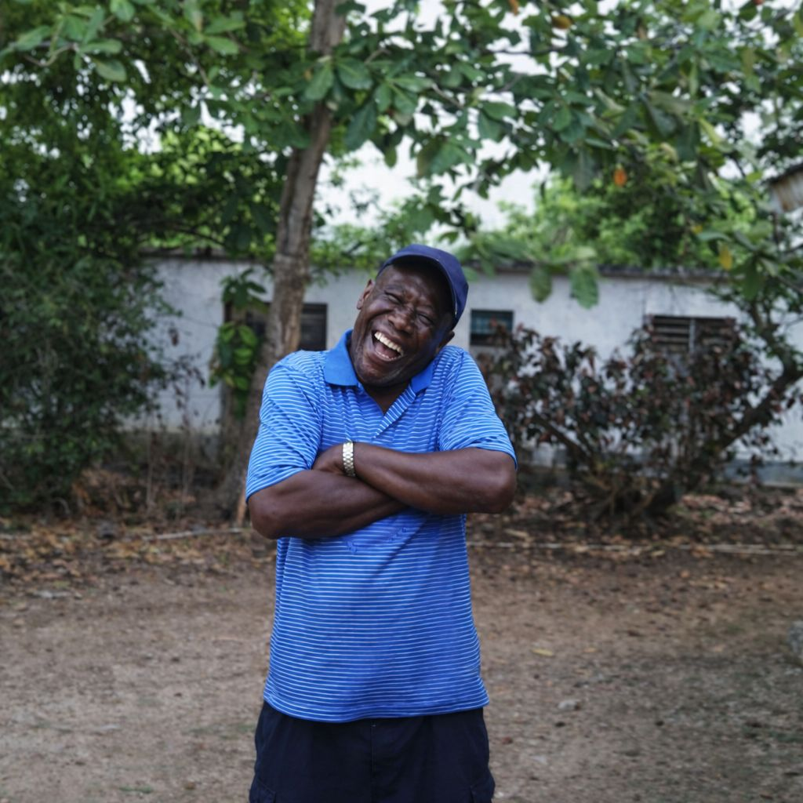

September 14, 1939 - February 6, 2026
New Testament Church of God - St Ann's Bay April 04, 2026 @ 11:00 AM
Father, brother, uncle, cousin, and friend to many
Departed this land on February 6, 2026 at age 86
Born in 1939 to Julia Rose and Wilfred Drake
Known for his unwavering kindness and his quiet but blunt nature, he leaves behind a legacy of love and a lasting reputation of his character.
He was also known for never missing a beat when it came to his sense of humor, always ready with a remark that could bring laughter even in the simplest moments.
A true entrepreneur, his life was one marked by ventures across many fields, touching the lives of many and earning the respect and admiration of all who knew him.
God looked around his garden And found an empty space He then looked down upon the earth And saw your tired face Sleep in peace, Rudolph